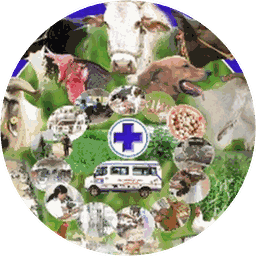

జనగామ పశు సేవ
Jangaon Pashu Seva · District Administration
Install

తెలంగాణ ప్రభుత్వం · పశుసంవర్ధక శాఖ
Government of Telangana · Animal Husbandry Dept
జనగామ పశు సేవ
ఉచిత వైద్య సలహా · ప్రభుత్వ డాక్టర్ కాల్ చేస్తారు
Jangaon District · 12 mandals · Veterinary & AH Dept
లోడ్ అవుతోంది…
ఇన్స్టాల్ చేయడానికి: మెనూ (⋮) →
Chrome లో తెరవండి
To install: menu (⋮) → Open in Chrome